この実験は『統計・確率の意味がわかる』（野崎他、ベレ出版）に従っています。柱状グラフの作り方等の詳細はこの本に書かれてあります。
以下の指示に従って作業をしなさい。
| トータル | ||
|---|---|---|
| 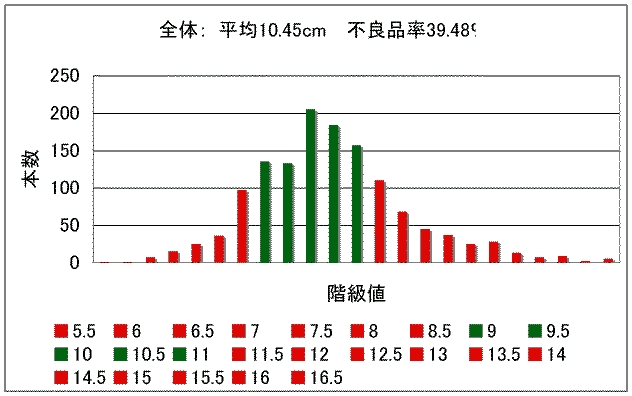 | ||
| 平均：10.45cm 不良品率：39.5％ | ||
| Ａ | Ｂ | Ｃ |
| 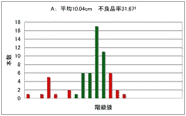 | 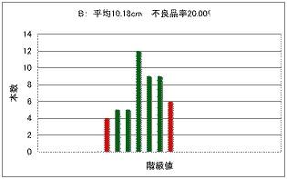 | 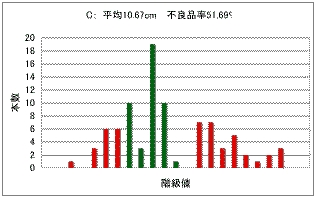 |
| 平均：10.04cm 不良品率：31.7％ | 平均：10.18cm 不良品率：20.0％ | 平均：10.67cm 不良品率：51.7％ |
| Ｄ | Ｅ | Ｆ |
| 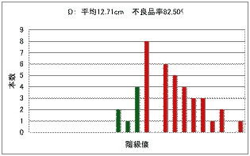 | 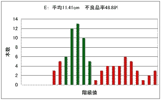 | 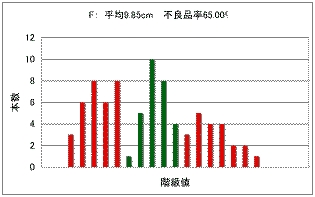 |
| 平均：12.71cm 不良品率：82.5％ | 平均：11.41cm 不良品率：48.9％ | 平均：9.80cm 不良品率：65.0％ |
| Ｇ | Ｈ | Ｉ |
| 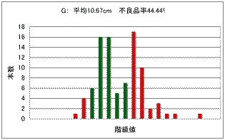 | 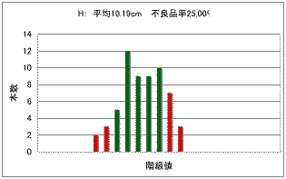 | 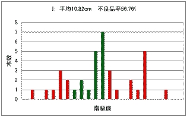 |
| 平均：10.67cm 不良品率：44.4％ | 平均：10.19cm 不良品率：25.0％ | 平均：10.82cm 不良品率：56.8％ |
| Ｊ | Ｋ | Ｌ |
| 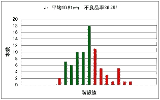 | 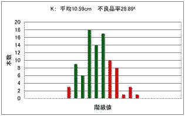 | 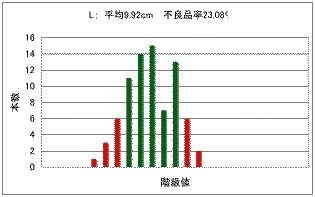 |
| 平均：10.91cm 不良品率：36.3％ | 平均：10.59cm 不良品率：28.9％ | 平均：9.92cm 不良品率：23.1％ |
| Ｍ | Ｎ | Ｏ |
| 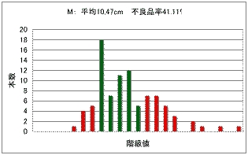 | 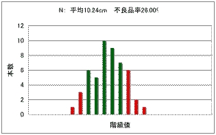 | 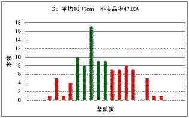 |
| 平均：10.47cm 不良品率：41.1％ | 平均：10.24cm 不良品率：26.0％ | 平均：10.71cm 不良品率：47.0％ |
| Ｐ | Ｑ | Ｒ |
| 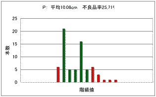 | 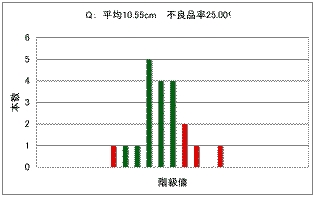 | 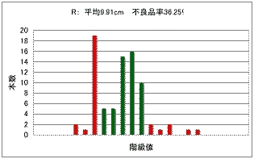 |
| 平均：10.06cm 不良品率：25.71％ | 平均：10.55cm 不良品率：25.0％ | 平均：9.91cm 不良品率：36.3％ |
| Ｓ | ||
| 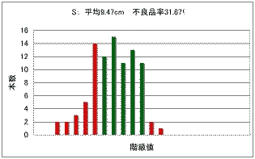 | ||
| 平均：9.47cm 不良品率：31.87％ | ||